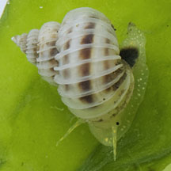
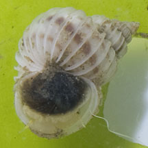
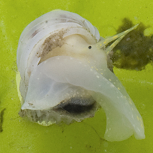

|
|
| shelled snails text index | photo index |
| Phylum Mollusca > Class Gastropoda |
| Wentletrap Family Epitoniidae updated Aug 2020 Where seen? A tiny one was seen among a bloom of seaweeds on a sandy shore in Seletar. 'Wentletrap' is the Dutch word for 'spiral staircase'. The elegant shell does indeed resemble one! Features: A distinctive shell with a long turret and strong sharp ribs across all of the whorls. Shells generally white with a porcelain-like texture. A circular shell opening with a shelly operculum, usually black. Eggs are laid in sand-covered strings resembling a necklace. What do they eat? Though the circular shell opening suggest the snails are herbivourous, there are suggestions that those with purple body and purple stains on the shell may be carnivorous. Some may produce a purple dye. Some of them are believed to eat sea anemones that live in sand. |
 Seletar, Feb 12 |
 |
 |
| Wentletrap snails on Singapore shores |
On wildsingapore
flickr
|
| Family
Epitoniidae recorded for Singapore from Tan Siong Kiat and Henrietta P. M. Woo, 2010 Preliminary Checklist of The Molluscs of Singapore. ^from WORMS
|
Links
References
|